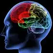

{kind=link}
This is important, especially for those of us who have children who have, or may someday, be helped by a psychologist, as well as for those of us adults who have, or will. It’s important that we’re aware that a pervasively negative view toward religion exists in this field, and that discretion should be used in the search for a good psychologist, whose guidance could make all the difference in your or your child’s emotional and spiritual health.
Dr. Grossman knows it all too well. She’s lived and breathed theophobia through her job as a psychiatrist, primarily on the college campus of one of America’s most prestigious universities, where she’s worked most of her profession. Yes, she is helping shape the newest crop of young adults in our society, and so are her many colleagues who fall into the category of being “theophobic.”
Don’t believe her? Consider this: (p.44) “A search in the indexes of several recently published, authoritative psychology and psychiatry textbooks…reveal no entries for church, religion, prayer or God.” When such textbooks do discuss religion, Grossman points out, it is often with a focus on religious pathology.
“A past president of the American Psychological Association called on psychologists to help get rid of organized religion,” she wrote, quoting the article, ‘It doesn’t matter which religion, they are all patriarchal. And that is one of the major sources of social injustice in our society and in our world.'”
That’s just part of the evidence to back her claim. But I don’t want to take too much more of your time today, so let’s assume she’s right here (and I believe she is). Skip ahead to p. 48, where Grossman shares this:
“As much as mental health professionals and organizations may shun issues of faith due to theophobia, 75 percent of college students are on a spiritual search and seek answers to existential questions. Sounds like a large population but it shouldn’t come as a surprise; it’s consistent with research indicating that neurologically, we may be designed to search for meaning.
“You probably haven’t heard about it. Two neuroscientists at the University of Pennsylvania used radioactive imaging to study the brain’s capacity for spiritual experience. They scanned the heads of skilled Tibetan meditators and Franciscan nuns following a period of intense religious contemplation, and discovered an unusual pattern of brain activity. As peak moments approached, the circuits responsible for orientation in time and space fell quiet. The area of the brain that informs us where we end, and the rest of the world starts, was turned off. These moments, according to the subjects, were accompanied by a rush of positive emotion. They were moments of ‘being connected to all of creation,’ of ‘a sense of timelessness and infinity’ and ‘a tangible sense of the closeness of God and a mingling with Him.’ The researchers suggest that the brain is equipped from birth with a capacity – even an urge –for religious experience, and they call the study of this capacity ‘neurotheology.’
“They even admit:
Our research has left us no choice but to conclude that mystics may be on to something, that the mind’s machinery of transcendence may in fact be a window through which we can glimpse the ultimate realness of something that is truly divine. This conclusion is based on deductive reason, not on religious faith – it is a terrifically unscientific idea that is ironically consistent with careful, conventional science.
At this point, Grossman argues that “psychology had better get its act together.”
“The irrational avoidance of religion in therapeutic work is not only unethical, it’s old. It has no place in this century, where single-photon emission computed tomography identifies ‘neuronal spirituality circuits’ and produces color photos of a brain connecting with God.
This was absolutely fascinating to me, not because it was surprising, but because this is evidence, scientific evidence, to back up what I have believed – or known, rather – most of my life.
God is not a figment of our imaginations. Prayer is not futile. The Holy Spirit is not make-believe. Jesus isn’t a farce.
There’s an order to this world, and those of us who “have seen and believed” have, on average, happier, more satisfying lives.
It’s not fair, to anyone really, that we so easily discount the presence of God in this world, not to mention the next. I know I’m likely preaching to the choir here, since my readers are largely Christian, or at least God-believing. But are we aware of how our faith is being compromised in the field of medicine, especially psychiatry and psychology?
More and more, science is proving what so many seek to disprove: that God exists. Acknowledging God as our loving, omnipotent creator improves our lives exponentially.
Have you ever experienced the reality of theophobia? In what context?